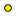
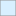

<!doctype html>
<html lang="en">
    <head>
        <meta charset="utf-8">
        <meta http-equiv="X-UA-Compatible" content="IE=edge">
        <meta name="viewport" content="initial-scale=1,user-scalable=no,maximum-scale=1,width=device-width">
        <meta name="mobile-web-app-capable" content="yes">
        <meta name="apple-mobile-web-app-capable" content="yes">
        <link rel="stylesheet" href="css/leaflet.css">
        <link rel="stylesheet" href="css/qgis2web.css">
        <style>
        html, body, #map {
            width: 100%;
            height: 100%;
            padding: 0;
            margin: 0;
        }
        </style>
        <title></title>
    </head>
    <body>
        <div id="map">
        </div>
        <script src="js/qgis2web_expressions.js"></script>
        <script src="js/leaflet.js"></script>
        <script src="js/multi-style-layer.js"></script>
        <script src="js/leaflet.rotatedMarker.js"></script>
        <script src="js/leaflet.pattern.js"></script>
        <script src="js/leaflet-hash.js"></script>
        <script src="js/Autolinker.min.js"></script>
        <script src="js/rbush.min.js"></script>
        <script src="js/labelgun.min.js"></script>
        <script src="js/labels.js"></script>
        <script src="data/_0.js"></script>
        <script src="data/_1.js"></script>
        <script src="data/_2.js"></script>
        <script src="data/_3.js"></script>
        <script src="data/_4.js"></script>
        <script>
        var map = L.map('map', {
            zoomControl:true, maxZoom:14, minZoom:6
        })
        var hash = new L.Hash(map);
        map.attributionControl.addAttribution('<a href="https://github.com/tomchadwin/qgis2web" target="_blank">qgis2web</a>');
        var bounds_group = new L.featureGroup([]);
        var basemap0 = L.tileLayer('http://{s}.tile.openstreetmap.org/{z}/{x}/{y}.png', {
            attribution: '&copy; <a href="http://openstreetmap.org">OpenStreetMap</a> contributors,<a href="http://creativecommons.org/licenses/by-sa/2.0/">CC-BY-SA</a>',
            maxZoom: 14
        });
        basemap0.addTo(map);
        function setBounds() {
            if (bounds_group.getLayers().length) {
                map.fitBounds(bounds_group.getBounds());
            }
        }
        function pop__0(feature, layer) {
        }

        function style__0_0() {
            return {
                pane: 'pane__0',
                opacity: 1,
                color: 'rgba(121,121,121,1.0)',
                dashArray: '1,5',
                lineCap: 'butt',
                lineJoin: 'miter',
                weight: 1.0, 
                fill: true,
                fillOpacity: 1,
                fillColor: 'rgba(170,170,170,0.250980392157)',
            }
        }
        map.createPane('pane__0');
        map.getPane('pane__0').style.zIndex = 400;
        map.getPane('pane__0').style['mix-blend-mode'] = 'normal';
        var layer__0 = new L.geoJson(json__0, {
            attribution: '<a href=""></a>',
            pane: 'pane__0',
            onEachFeature: pop__0,
            style: style__0_0,
        });
        bounds_group.addLayer(layer__0);
        map.addLayer(layer__0);
        function pop__1(feature, layer) {
        }

        function style__1_0() {
            return {
                pane: 'pane__1',
                opacity: 1,
                color: 'rgba(147,147,147,1.0)',
                dashArray: '',
                lineCap: 'butt',
                lineJoin: 'miter',
                weight: 1.0, 
                fill: true,
                fillOpacity: 1,
                fillColor: 'rgba(105,195,255,0.250980392157)',
            }
        }
        map.createPane('pane__1');
        map.getPane('pane__1').style.zIndex = 401;
        map.getPane('pane__1').style['mix-blend-mode'] = 'normal';
        var layer__1 = new L.geoJson(json__1, {
            attribution: '<a href=""></a>',
            pane: 'pane__1',
            onEachFeature: pop__1,
            style: style__1_0,
        });
        bounds_group.addLayer(layer__1);
        map.addLayer(layer__1);
        function pop__2(feature, layer) {
        }

        function style__2_0() {
            return {
                pane: 'pane__2',
                opacity: 1,
                color: 'rgba(147,147,147,1.0)',
                dashArray: '',
                lineCap: 'butt',
                lineJoin: 'miter',
                weight: 1.0, 
                fillOpacity: 0,
            }
        }
        map.createPane('pane__2');
        map.getPane('pane__2').style.zIndex = 402;
        map.getPane('pane__2').style['mix-blend-mode'] = 'normal';
        var layer__2 = new L.geoJson(json__2, {
            attribution: '<a href=""></a>',
            pane: 'pane__2',
            onEachFeature: pop__2,
            style: style__2_0,
        });
        bounds_group.addLayer(layer__2);
        map.addLayer(layer__2);
        function pop__3(feature, layer) {
        }

        function style__3_0() {
            return {
                pane: 'pane__3',
                opacity: 1,
                color: 'rgba(255,31,31,0.701960784314)',
                dashArray: '',
                lineCap: 'butt',
                lineJoin: 'miter',
                weight: 2.0, 
                fillOpacity: 0,
            }
        }
        map.createPane('pane__3');
        map.getPane('pane__3').style.zIndex = 403;
        map.getPane('pane__3').style['mix-blend-mode'] = 'normal';
        var layer__3 = new L.geoJson(json__3, {
            attribution: '<a href=""></a>',
            pane: 'pane__3',
            onEachFeature: pop__3,
            style: style__3_0,
        });
        bounds_group.addLayer(layer__3);
        map.addLayer(layer__3);
        function pop__4(feature, layer) {
            var popupContent = '<table>\
                    <tr>\
                        <th scope="row">fid</th>\
                        <td>' + (feature.properties['fid'] !== null ? Autolinker.link(String(feature.properties['fid'])) : '') + '</td>\
                    </tr>\
                    <tr>\
                        <td colspan="2">' + (feature.properties['name'] !== null ? Autolinker.link(String(feature.properties['name'])) : '') + '</td>\
                    </tr>\
                </table>';
            layer.bindPopup(popupContent, {maxHeight: 400});
        }

        function style__4_0() {
            return {
                pane: 'pane__4',
                radius: 6.0,
                stroke: false,
                fill: true,
                fillOpacity: 1,
                fillColor: 'rgba(234,116,155,0.0)',
            }
        }
        function style__4_1() {
            return {
                pane: 'pane__4',
                radius: 4.0,
                stroke: false,
                fill: true,
                fillOpacity: 1,
                fillColor: 'rgba(0,0,0,1.0)',
            }
        }
        function style__4_2() {
            return {
                pane: 'pane__4',
                radius: 3.0,
                stroke: false,
                fill: true,
                fillOpacity: 1,
                fillColor: 'rgba(255,251,0,1.0)',
            }
        }
        map.createPane('pane__4');
        map.getPane('pane__4').style.zIndex = 404;
        map.getPane('pane__4').style['mix-blend-mode'] = 'normal';
        var layer__4 = new L.geoJson.multiStyle(json__4, {
            attribution: '<a href=""></a>',
            pane: 'pane__4',
            onEachFeature: pop__4,
            pointToLayers: [function (feature, latlng) {
                var context = {
                    feature: feature,
                    variables: {}
                };
                return L.circleMarker(latlng, style__4_0(feature));
            },function (feature, latlng) {
                var context = {
                    feature: feature,
                    variables: {}
                };
                return L.circleMarker(latlng, style__4_1(feature));
            },function (feature, latlng) {
                var context = {
                    feature: feature,
                    variables: {}
                };
                return L.circleMarker(latlng, style__4_2(feature));
            },
        ]});
        bounds_group.addLayer(layer__4);
        map.addLayer(layer__4);
        var baseMaps = {};
        L.control.layers(baseMaps,{' Проектні пункти ПМД': layer__4,' Межі областей': layer__3,' Межі районів': layer__2,' Межі ОТГ': layer__1,' Тимчасово окуповані території': layer__0,},{collapsed:false}).addTo(map);
        setBounds();
        </script>
    </body>
</html>
